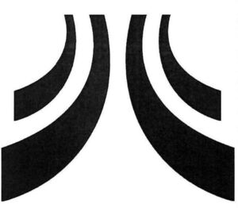

Trade Mark Journal No.2025/030 25 July 2025
WO0000001863870 (9,21,24,27,28)
Office of origin: Montenegro
Date of International Registration:25 February 2025
Date of designation in the UK:
25 February 2025

- Class 9
- Spectacles; optical lenses; spectacle chains; contact lenses; spectacle cords; spectacle lenses; spectacle cases; spectacle frames; sunglasses; lens cases; containers for contact lenses; footwear for protection against accidents, irradiation and fire; life jackets; clothing for protection against accidents, irradiation and fire; gloves for protection against accidents; dive skins; divers' masks; nose clips for divers and swimmers; gloves for divers; breathing apparatus for underwater swimming; head protection; chronographs [time recording apparatus]; pedometers; walkie-talkies; teeth protectors; goggles for sports; snorkels; smartwatches; personal stereos; cell phone covers; wearable activity trackers; headphones; diving suits; wet suits; dry suits; helmets for use in sports; shields for protecting the body against injury.
- Class 21
- Household or kitchen utensils; containers for household or kitchen use; combs; sponges; brushes; material for brush-making; cleaning articles; steel wool for cleaning; unworked glass [except glass used in building]; semi-worked glass [except glass used in building]; crystal [glassware]; porcelain ware; earthenware; bottle openers, electric and non-electric; cruet sets for oil and vinegar; cocktail stirrers; candle extinguishers; make-up removing appliances; sugar bowls; trays for household purposes; baby baths, portable; dishcloths; tea strainers; candy boxes; bottles; shaving brushes; coffeepots, non-electric; bread bins; heaters for feeding bottles, non-electric; shoe horns; candelabra [candlesticks]; pipettes [wine-tasters]; epergnes; baskets for household purposes; strainers; clothing stretchers; ice buckets; tie presses; comb cases; ironing board covers, shaped; gardening gloves; gloves for household purposes; polishing gloves; shoe trees; non-metal coin banks; soap racks; decanters; birdcages; fitted vanity cases; works of art of porcelain, ceramic, earthenware, terra-cotta or glass; toothpick holders; carpet beaters [hand instruments]; bread baskets for household purposes; cloths for cleaning; pepper pots; clothes-pegs; table plates; feather-dusters; shaving brush stands; sponge holders; toilet paper holders; trouser presses; scent sprays [atomizers]; crumb trays; coasters, not of paper or textile; trivets [table utensils]; boot jacks; salt cellars; clothes drying racks; coffee services [tableware]; tea services [tableware]; table napkin holders; washing boards; ironing boards; cutting boards for the kitchen; cups; teapots; flower pots; tableware, other than knives, forks and spoons; heat-insulated containers; toothbrushes; floss for dental purposes; fruit presses, non-electric, for household purposes; buttonhooks; siphon bottles for carbonated water; nozzles for watering cans; cat litter pans; cages for household pets; cattle hair for brushes; mangers for animals; buckets; dish covers; indoor aquaria; mess-tins; cookware, except forks, knives and spoons; beaters, non-electric; drinking bottles for sports; glass jars [carboys]; isothermic bags; demijohns; glasses [receptacles]; nozzles for watering hose; powder puffs; busts of porcelain, ceramic, earthenware, terra-cotta or glass; brushes for footwear; stew-pans; pots; closures for pot lids; boxes of glass; coffee grinders; tea caddies; cheese-dish covers; candle drip rings; jugs; lazy susans; earthenware saucepans; dishwashing brushes; traps for rodents; ceramics for household purposes; beer mugs; fitted picnic baskets, including dishes; cooking utensils, non-electric; cookery moulds; jars; washtubs; fruit cups; corkscrews, electric and non-electric; cosmetic utensils; sieves [household utensils]; painted glassware; cups of paper or plastic; drinking goblets; dustbins for household purposes; flower-pot covers, not of paper; mixing spoons [kitchen utensils]; bowls [basins]; deodorizing apparatus for personal use; soap dispensing bottles; funnels; salad bowls; brooms; mops; brushes for cleaning tanks and containers; enamelled glass; spatulas for kitchen use; spice sets; statues, figurines, plaques and works of art, made of materials such as porcelain, terra-cotta or glass, included in the class; scouring pads; strainers for household purposes; holders for flowers and plants [flower arranging]; flasks; deep fryers, non-electric; frying pans; dishes; chamois leather for cleaning; ice cube moulds; vessels of metal for making ices and iced drinks; egg cups; glass signboards; porcelain signboards; liqueur sets; pie funnels; butter dishes; cooking pots, non-electric; cocktail shakers; mosaics of glass, not for building; portable cool boxes, non-electric; autoclaves, non-electric, for cooking; chamber pots; scoops for household purposes; toothpicks; rolling pins, domestic; perfume burners, electric and non-electric; powder compacts; currycombs; watering cans; watering devices; cookie [biscuit] cutters; soup tureens; glass stoppers for bottles; mugs; buckets made of woven fabrics; indoor terrariums [vivariums]; towel racks; urns; candle jars [holders]; vases; knife rests for the table; garlic presses [kitchen utensils]; graters for kitchen use; chopsticks.
- Class 24
- Textiles and substitutes for textiles; linens; curtains of textile or plastic; bed linen; table linen; bath linen; cloths for removing make-up; labels of textile; linings [textile]; wall hangings of textile; handkerchiefs of textile; bath mitts; shrouds; towels of textile; travelling rugs [lap robes]; curtains; curtain holders of textile material; flags of textile or plastic; duvets; coverings for furniture; covers for cushions; mattress covers; pillowcases; mosquito nets; glass cloths [towels]; billiard cloth; tablecloths, not of paper; traced cloths for embroidery; face towels of textile; sleeping bags [sheeting]; cotton fabrics; haircloth [sackcloth]; brocades; lining fabric for footwear; fabric for footwear; bed covers; bed blankets; trellis [cloth]; zephyr [cloth]; cheviots [cloth]; ticks [mattress covers]; shower curtains of textile or plastic; crepe [fabric]; crepon; damask; elastic woven fabrics; oilcloth for use as tablecloths; gummed cloth, other than for stationery purposes; esparto fabric; chenille fabric; felt; flannel [fabric]; fitted toilet lid covers of fabric; gauze [cloth]; jersey [fabric]; woollen cloth; lingerie fabric; linen cloth; place mats of textile; printers' blankets of textile; marabouts [cloth]; woven fabrics for furniture; fabric of imitation animal skins; knitted fabric; cheese cloth; ramie fabric; rayon fabric; silk [cloth]; taffeta [cloth]; fibreglass fabrics for textile use; adhesive fabric for application by heat; patterned textiles for use in embroidery; velvet; tulle; table runners of textile; sleeping bags.
- Class 27
- Carpets; door mats; mats; beach mats; bathmats; linoleum; wall hangings, not of textile; wallpaper; floor coverings and artificial ground coverings; primary carpet backing; yoga mats.
- Class 28
- Gymnastic and sporting articles; decorations for Christmas trees; baseball gloves; boxing gloves; fencing gauntlets; golf gloves; puppets; body-building apparatus; bladders of balls for games; elbow guards [sports articles]; knee guards [sports articles]; flippers for swimming; archery implements; water wings; balls for games; bodyboards; skittles [games]; golf club bags; darts; discuses for sports; skis; sole coverings for skis; surfboard covers; hockey sticks; table-top games; skateboards; golf clubs; billiard cues; billiard tables; in-line roller skates; ice skates; roller skates; scooters [toys]; punching bags; rackets; surfboards; sailboards; chessboards; spring boards [sports articles]; sleds [sports articles]; shuttlecocks; foosball tables; stationary exercise bicycles; tables for table tennis; yoga blocks; yoga straps; yoga wheels; football gloves; weight lifting gloves; gloves made specifically for use in playing sports; sportballs; dumb-bells; protective padding for sports; skipping ropes; basketball baskets; ski sticks; abdominal wheel rollers for fitness purposes.
INDUSTRIA DE DISEÑO TEXTIL, S.A. (INDITEX, S.A.)
Representative: Mladen Čolović, Marka Radovića 37, Podgorica, MONTENEGRO